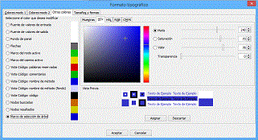
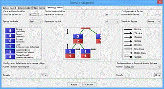

|
SRec offers many ways to configure thr format of the visualization: colours, sizes, borders, ... When the option Configuration / Typographical format is selected, a dialog box appears, which contains four tabs. The first tab is dedicated to the mode 1 of color. The mode distinguishes between in values and out valores, so cells with in values will be colored in a different color that cells with out values. Second of the tabs manages the modo 2 of color. This mode colours nodes according to the method what they belong to, so nodes of one method are colored with different color that nodes of other methods. The third tab allows to configure the color for the background, edges, frames and others elements. Fourth of the tabs, oriented to sizes, forms and fonts, it offers the possibility of choosing an edge for the cells, wide of the frame for the active node or for the active branch nodes, the distance between the cells of the recursive tree, the used type of arrow or the width of the same one. In this fourth tab it's possible to configurate the font for the code view and the running trace view. It's configurable the typography and the size (the color can be modified in the first tab). |
 |
__________